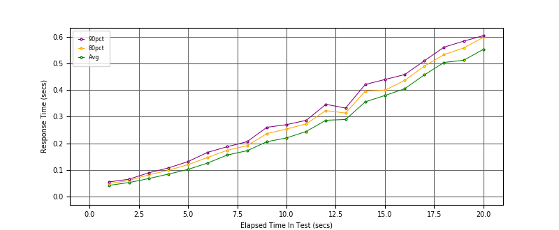
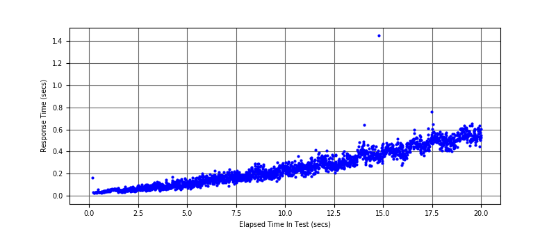
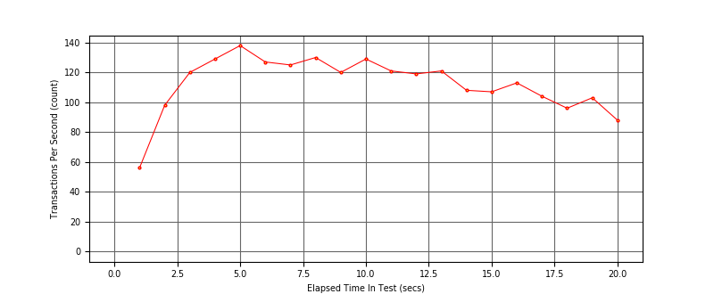

Performance Results Report
Summary
transactions: 2312
errors: 0
run time: 20 secs
rampup: 20 secs
test start: 2018-07-23 08:59:24
test finish: 2018-07-23 08:59:44
time-series interval: 1 secs
workload configuration:
| group name | threads | script name |
|---|
| user_group-1 | 60 | v_perf.py |
All Transactions
Transaction Response Summary (secs)
| count | min | avg | 80pct | 90pct | 95pct | max | stdev |
|---|
| 2312 | 0.028 | 0.254 | 0.414 | 0.494 | 0.535 | 1.449 | 0.159 |
Interval Details (secs)
| interval | count | rate | min | avg | 80pct | 90pct | 95pct | max | stdev |
|---|
| 1 | 56 | 56.00 | 0.028 | 0.043 | 0.050 | 0.055 | 0.057 | 0.165 | 0.019 |
| 2 | 98 | 98.00 | 0.034 | 0.053 | 0.060 | 0.066 | 0.070 | 0.083 | 0.010 |
| 3 | 120 | 120.00 | 0.041 | 0.068 | 0.082 | 0.089 | 0.094 | 0.103 | 0.014 |
| 4 | 129 | 129.00 | 0.045 | 0.084 | 0.099 | 0.108 | 0.120 | 0.146 | 0.017 |
| 5 | 138 | 138.00 | 0.059 | 0.102 | 0.120 | 0.131 | 0.141 | 0.172 | 0.021 |
| 6 | 127 | 127.00 | 0.065 | 0.126 | 0.147 | 0.166 | 0.179 | 0.199 | 0.028 |
| 7 | 125 | 125.00 | 0.088 | 0.156 | 0.174 | 0.187 | 0.206 | 0.240 | 0.026 |
| 8 | 130 | 130.00 | 0.106 | 0.172 | 0.191 | 0.206 | 0.215 | 0.238 | 0.024 |
| 9 | 120 | 120.00 | 0.134 | 0.206 | 0.236 | 0.260 | 0.273 | 0.291 | 0.036 |
| 10 | 129 | 129.00 | 0.133 | 0.220 | 0.253 | 0.270 | 0.283 | 0.311 | 0.038 |
| 11 | 121 | 121.00 | 0.173 | 0.244 | 0.273 | 0.286 | 0.296 | 0.358 | 0.034 |
| 12 | 119 | 119.00 | 0.180 | 0.286 | 0.323 | 0.346 | 0.364 | 0.413 | 0.046 |
| 13 | 121 | 121.00 | 0.210 | 0.289 | 0.313 | 0.332 | 0.367 | 0.400 | 0.037 |
| 14 | 108 | 108.00 | 0.262 | 0.355 | 0.396 | 0.421 | 0.459 | 0.642 | 0.058 |
| 15 | 107 | 107.00 | 0.270 | 0.379 | 0.399 | 0.439 | 0.449 | 1.449 | 0.112 |
| 16 | 113 | 113.00 | 0.280 | 0.404 | 0.436 | 0.458 | 0.473 | 0.513 | 0.041 |
| 17 | 104 | 104.00 | 0.339 | 0.456 | 0.489 | 0.509 | 0.524 | 0.599 | 0.044 |
| 18 | 96 | 96.00 | 0.408 | 0.503 | 0.532 | 0.560 | 0.575 | 0.761 | 0.052 |
| 19 | 103 | 103.00 | 0.405 | 0.511 | 0.558 | 0.583 | 0.602 | 0.636 | 0.054 |
| 20 | 88 | 88.00 | 0.447 | 0.552 | 0.597 | 0.604 | 0.619 | 0.651 | 0.045 |
Graphs
Response Time: 1 sec time-series

Response Time: raw data (all points)

Throughput: 5 sec time-series
